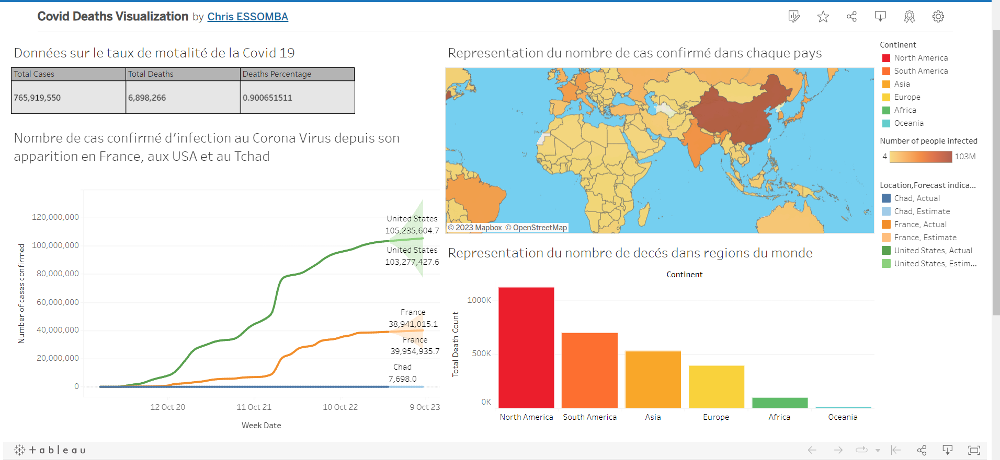

Ce projet a été réalisé dans le cadre de ma certification IBM Data Science et visait à utiliser des données sur les décollages des fusées SpaceX Falcon 9 pour prédire leur probabilité de réussite. En utilisant le modèle d'apprentissage automatique de l'arbre de décision,
nous avons identifié les modèles de fusées les plus susceptibles de réussir leurs décollages, les sites les plus propices pour les lancements, ainsi que la relation entre les investissements et les taux de réussite.

Ce projet avait pour objectif d'effectuer une analyse approfondie des données relatives à la pandémie de COVID-19, en se concentrant sur la réponse à des questions et problématiques telles que :
Quels sont les facteurs qui influencent la propagation et la gravité du COVID-19 ?
Quel est l'impact de la vaccination sur la propagation et la mortalité liées au virus ?

Ce projet visait à présenter de manière claire et concise les informations les plus pertinentes issues de l'analyse des statistiques de la COVID-19. L'objectif principal était d'utiliser des tableaux interactifs pour visualiser ces données de manière accessible et compréhensible.
Découvrez notre projet de portefeuille dans lequel nous avons développé un modèle de prédiction des décisions de crédit en utilisant l'algorithme d'apprentissage automatique de l'arbre de décision. Ensuite, nous avons créé une interface intuitive qui permet aux utilisateurs de fournir des informations clés et de déterminer instantanément leur éligibilité à un crédit en utilisant le Framework Flask.
Dans ce projet captivant, j'ai exploité un sondage auprès de 630 professionnels de la data pour découvrir les tendances et les facteurs clés qui influencent les salaires. En utilisant Power BI, j'ai créé des visualisations percutantes pour identifier les métiers les mieux rémunérés, les langages de programmation les plus populaires et les préférences professionnelles. Les résultats ont révélé des insights passionnants sur l'impact du pays de travail sur les salaires. Une analyse approfondie qui ouvre de nouvelles perspectives dans le monde de la data.